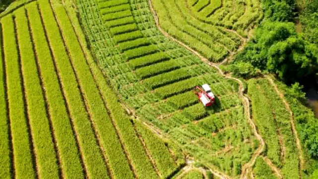
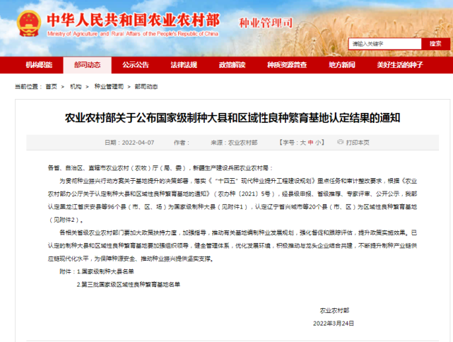
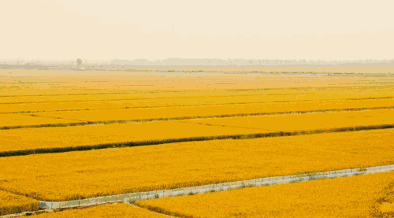
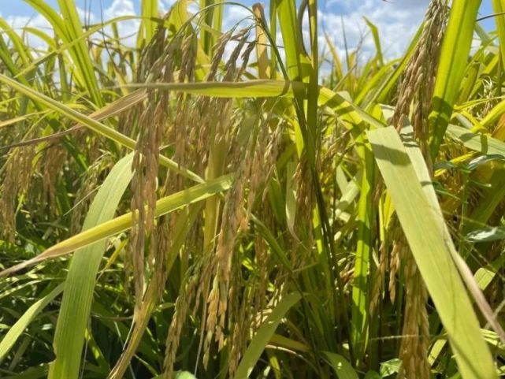
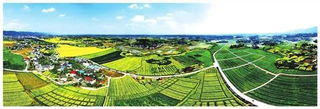

|
赞！垫江县入围种子基地“国家队” |
近日 农业农村部发布 关于公布国家级制种大县和 区域性良种繁育基地 认定结果的通知 |
|  |
重庆市共两个区县上榜 咱们垫江占据一席！ 点击播放 GIF 0.0M垫江县被认定为国家级水稻制种大县 潼南区被认定为国家级油菜制种大县 |
|  |
|  |
 |
垫江县地势平坦 有着悠久的水稻种植传统 垫江与中一种业 共建国家级杂交水稻制种基地 培育审 定“神龙优228”等杂交水稻新品种 实现耐高温、耐寡照目标 仅去年生产水稻种子300万公斤 获得了 国家新一轮杂交水稻 制种大县奖励1.5亿元 |
|  |
2021年 全市粮食种植面积3019.8万亩 同比增长0.5%平均单产361.9公斤/亩 同比提高近2公斤 创历史新高 总产量1092.9万吨 同比增长1.1% |
|  |
此次全国共有96个制种大县和20个区域性良种繁育基地入围。业内人士表示，开展此项认定工作，目的在于落实中央关于种业振兴决策部署和有关任务，加快农作物制种基地建设和保护，推动制种基地提 档升级，提高粮食和重要农产品供种保障能力。 |
 |